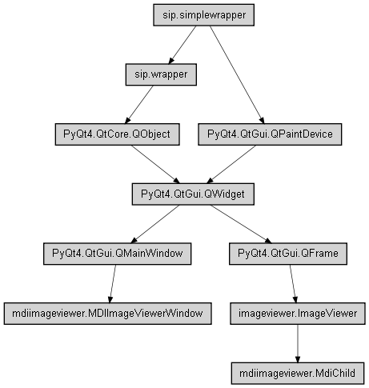

ImageViewer class
Bases: PyQt4.QtGui.QGraphicsView
QGraphicsView that synchronizes zooming & panning of multiple instances.
Also adds support for various scrolling operations and mouse wheel zooming.
Bases: PyQt4.QtGui.QFrame
Zooms & Pans images (pixmaps).
Change zoom to show image at actual size.
(image pixel is equal to screen pixel)
Disconnect scrollbar signals before closing.
If this isn’t done Python crashes!